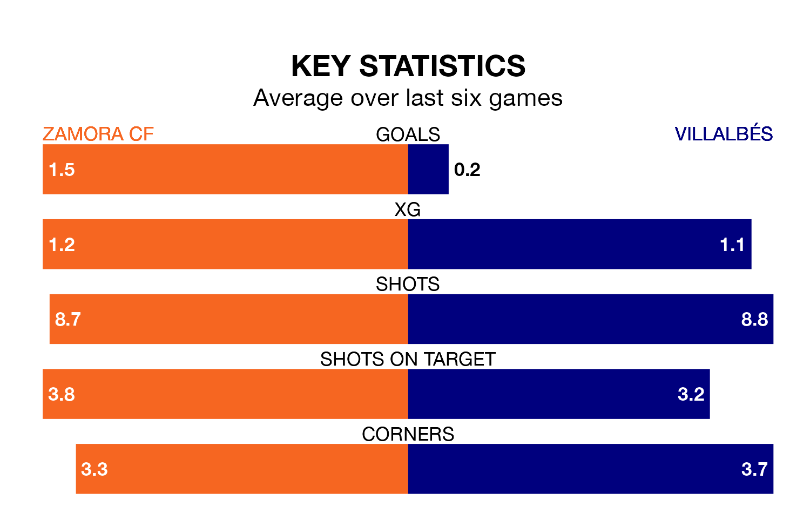

Zamora CF are heavy favourites to keep all three points at home in Sunday's kick-off against Villalbés.
Zamora, who sit third in the Segunda División RFEF Group 1 with 26 games played, are priced at 1.5 to seal victory at the Estadio Ruta de la Plata.
Sitting 11 places and 20 points behind them in the table, Villalbés are 6.8 to win with *Betting Company*, while the draw is at 3.8.
With 17 goals in 26 games so far this season, Villalbés are the league's lowest scorers with 0.7 goals per game. But they are conceding fewer than average too, letting in 24 goals at a rate of 0.9 per game.
Zamora, meanwhile, are above average scorers, with 1.2 goals per game, compared to a league average of 1.1. They have conceded 0.6 goals per game.
The home team are in reasonable form in the Segunda División RFEF Group 1, with three wins and two draws from their last six games.
With a win and two draws over that period, the visitors' form is much worse – they have taken five points from 18, compared to Zamora's 11.
Zamora's last match was on March 10, a 1-1 draw against Real Oviedo B, with Joel Priego getting the goal for Zamora.
Villalbés beat Deportivo La Coruña B 1-0 last time out, on March 9.
Updated: 15:10 (UTC), 15/03/24